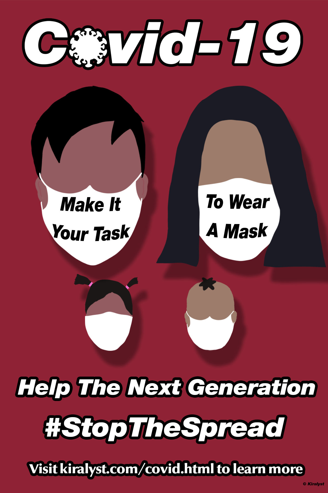

Covid-19 Advertisement Poster
This is a poster that I created in Photoshop while using Creative Commons images as inspiration for it. I realized shortly after submitting that I should have made this for my Adobe Illustrator project